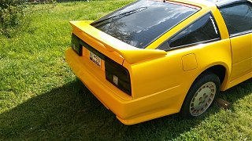

-
Does anyone know if an 84 300zx turbo 5spd have an A.I.V controler with a boost sensor located behind the left headlight drivers side front engine bay? I see 86 had it and remember my 86 t having one. If so can you post a photo? I got this pore 84 ae that looks to have been butchered for years and trying to get it right again
-
I'm not sure if the 84 and 85 models had it, but it might have been started in 86. running without it is fine, however I'm not sure if it is required for emissions. it basically reroutes air between the exhaust and the MAF. I removed mine from my 87 and it ran fine without it. one way to tell if your 84 came with one is look in the engine bay at the hose going from the MAF to the air resonator box (the thick curved one) if you see a nipple on the top that is plugged, or look on the exhaust downpipe, if you see a tube sticking out of it, that would indicate that it had the AIV. if you don't see these items, your car probably didn't have it and no need to worry about it. if you need, I have all the parts that came off my 87. you are welcome to those parts if you want.
by the way, you should have a boost sensor.... it is for the tach/speed indicator on the digital dash.
Hope this helps,
Bonny -
http://www.thumper300zx.com/z31/vacuum/vacuum.htm
Scroll down and you'll see a nice clean photo of an AIV setup.
For wiring, consult the holy FSM
Download the scripture for free from here: http://www.xenonzcar.com/z31/reference.html
Neither my AE or 84T GLL had an AIV system, just the boost sensor and FPR solenoid.
I did remove the AIV system on both of my 88SS cars.

84 AE/Shiro #683/Shiro #820/84 Turbo -
Figured it out aiv wasnt present in 84 it was a injector fan at one time lol.. Im over the ae z now i have the

Copyright © 2006–. All rights reserved. Privacy Policy